Week 1:
Date: January 11, 2019
Total hours: 8.5
Description of Design Effors:
Contributed to the finishing of the Final Proposal, and aided in the initial orientation to lab materials and account resources. PSSC's were my domain, and Yash aided with the pursuing of Todd for advice on edits, and we decided to take his advice and comments.
There were thoughts that we may use a Bluetooth chip to connect with the Raspberry Pi so that the casing for the door mount could be smaller and more sleek.
I was in charge of configuring the web page, I spent an evening ironing it out and fixing reference errors that were built in, only allowing it to access template files and images. Our files and images are in our group 2 folders, not the template folders, so there were obvious reasons why that was undesireable.
We should be straightened out now, the eventual resolution is an easy fix if any remain.
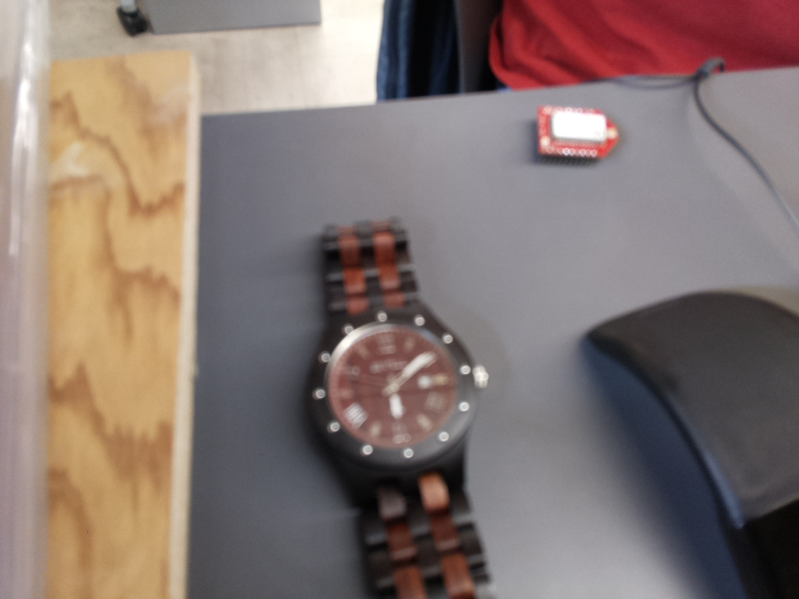 Figure 2.1: Test Picture Taken with Pi Camera
Week 2:
Date: January 18, 2019
Total hours: 20
Description of Design Effors:
In addition to contributing to the Assignment 2 document content and converting citations to IEEE format, efforts were made to acquire relevant materials available in lab to avoid purchasing every item.
Most elements of our project were available in lab, fortunately. Some work was done to try and acquire picture and video frame capture from the Raspberry Pi and the camera, and video and images were pulled successfully. Frame capture will be done in the near future.
As you can see, the image is also blurry, and this may be a concern for the facial recognition algorithm. Investigation in a USB camera alternative instead may be desireable.
Week 3:
Date: January 25, 2019
Total hours: 18
Description of Design Effors:
We took a closer look at the software FaceNet and its documentation to complete the Software Overview. Inspection shows little documentation on how to use the network from within an application, however, besides activating it in a terminal setting and then presumably parsing its output text.
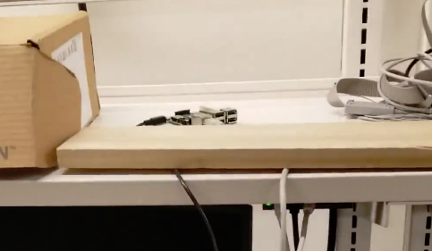 Figure 3.1: Setup for Remote Access in Lab
To this end, face_recognition is a library that prides itself in its ease of use and accuracy, though its install process may also potentially be touchy as well. Once installed, it is directly documented to show how images can be classified against a pretrained network, also for a 128 feature vector like FaceNet. Less reference is made for how this architecture is built or what it is based on, but we have the full potential to make the actual algorithm process a modular item, so that we can design with whichever module appears easiest in initial stages, and swap for the other if desired, treating it as a black box that takes in cropped face images and returns the feature vector.
It has also been brought to our attention that a PyPi module facenet_recognition has been made for FaceNet with the intent for user convenience like with face_recognition, though it seems to still rely largely from physical files and folders. This isn't altogether a disadvantage, and may prove to be a good compromise.
Finally, it was discovered that the Raspberry Pi was able to be seen and connected outside of lab, as long as access to either Purdue WiFi was available or a Purdue VPN was used at home. So, this has been taken to great effect for lengthy installs of OpenCV, Tensorflow, and currently DLIB, though there have been some minor issues with DLIB. We will be trying again over the coming weekend, and but otherwise may be limited to doing the face cropping on the server side of things. Most Pi progress has been investment in the lengthier installs this week, usually when they don't work without extra care.
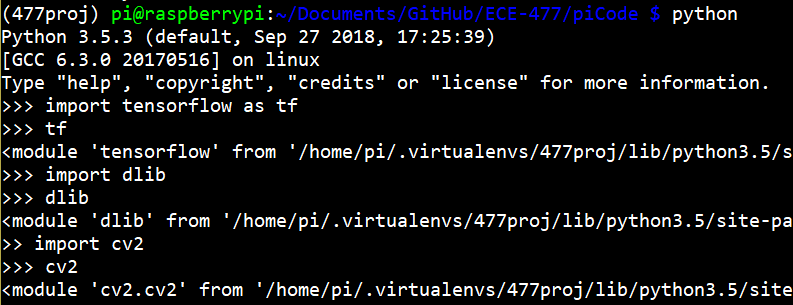 Figure 3.2: Installs Finally Worked
We also discussed ( I believe with Professor Thottethodi and (an)other TA(s) ) about changing our PSSC's from pointing at I2C to UART for communication with the Bluetooth module, as the bluetooth module found in the lab to use did not have I2C on its board.
Update: all libraries installed to the Pi, once the camera is calebrated we'll be able to start initial software design tests.
Week 4:
Date: January 31, 2019
Total hours: 12
Description of Design Effors:
The cold kept us from having lab, but I was able to put a good amount of work in all the same to streaming the taken pictures from the Pi to a WiFi/Ethernet connected device.
Frames from Pi Camera capturing
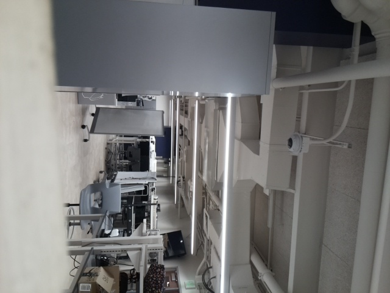
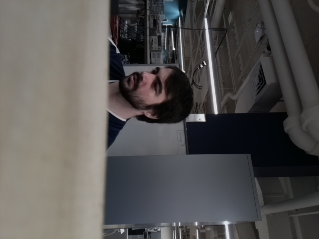
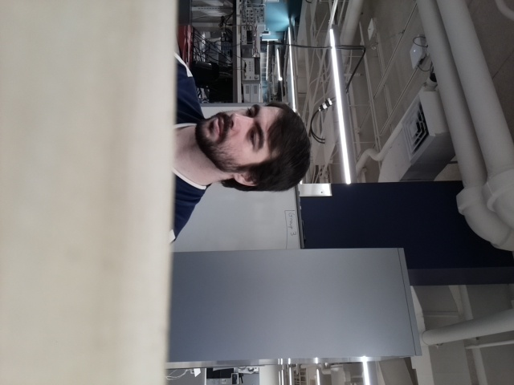
Figure 4.1: Four Frame Captures from the Pi Camera
The big challenge from here was working with the code to get something that's able to be pulled into an application program, rather than a one-off run file. The examples found online, including one that involved threading and was very efficient, were messy, used global variables everywhere, and was resistive to being turned into classes and functions. And when they were, the extra structure interfered with the threading enough that the best I could find was 2 frames per second, slower than what we decided was useful.
So I switched back to a synchronous/non-threaded approach, and was able to easily get a little over our targeted 4fps even from an of campus connection. There's a small amount of work that'll be done to pull it into an application (making and sustaining connections and camera priming, to reduce wait times), but that's only a short way off now.
The frames are sideways cause that was the easiest way to prop the camera up for now, we'll have it mounted in the end product correctly.
Week 5:
Date: February 8th, 2019
Total hours: 14
Description of Design Effors:
The cold kept us from having lab, but I was able to put a good amount of work in all the same to streaming the taken pictures from the Pi to a WiFi/Ethernet connected device.
Successful image transmisions and result responses to and from the Pi
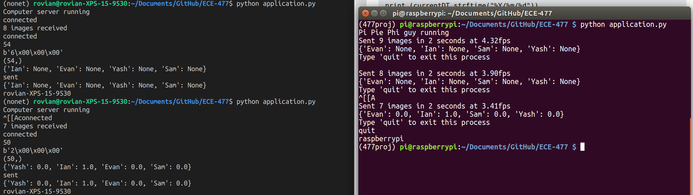
Figure 5.1: Pi Frame Capture
Did a lot of work this week trying to get the Pi to organize the streaming into an application-style file. Everything is centered around one application.py file, and it checks to make sure Python 3+ is used for uniformity.
This runs both the Pi and the Computer/Server code, after checking the operating system, and the Computer was turned into the server in respect to the Socket connection again, since this makes much more sense in a functional flow design.
FaceNet was effective, but turned out to be very terminal output and file reading/writing based, which slows down the computer processing segment significantly. Using the face_recognition library was a quick switch, and significantly faster.
Pre-processing of the known images can happen before a user even initiates the image transfer, saving a large amount of time generating the feature vectors, saving pre-known feature vectors to files to be read and loaded in instead. All that's left is taking the images of the current user, finding the feature vectors from them, and comparing, and face_recognition provides an interface to do that process efficiently as well.
All together, the switch was easy, and the DLIB-based face_recognition library was both quicker and designed for application use much better than the facenet_recognition library. Accuracy has been spot on so far as well, even with small known user sets: only once or twice have I been slightly mistaken for Evan in the output results, and that was a magnitude or two of difference in the confidence value for identifying me, I was very obviously still the person found in the picture.
From there, a connection was just needed for sending the results down to the Pi. That took a bit of time, as the Socket library isn't terribly documented on the background functionality and took a good bit of trial and error on my part, but eventually a JSON packet of name: confidence values was able to be sent down to the Pi cleanly, as the picture shows.
From there, we'll need to get Bluetooth working to work on the next part of the application. The Micro will be the major step for that, as we'll need a way to test that we've got a stable connection, and to send/receive input from the connected device. We'll likely invest time in finding and connecting to a phone app that'll let us do similar work with the Pi and the microcontroller.
Week 6:
Date: February 15th, 2019
Total hours: 16
Description of Design Effors:
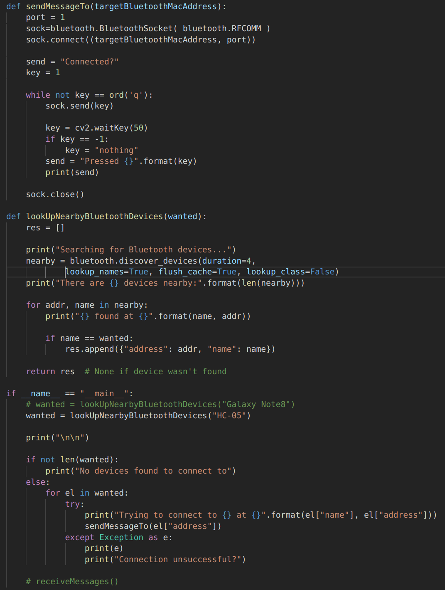
Figure 6.1: Pi Bluetooth Code, simple and dynamic. Searches for the device of a desired name, and then tries to send a message to that address. This was used and verified to connect to the HC-05 bluetooth chip, with the MSP432 recieving the transmission over UART.
This week was mostly oriented to getting Bluetooth working, something we've had staged to start testing on the Pi but were bottlenecked on the MSP432 til we got UART communication debugged and working.
Todd was a good help, Viktoryia and Evan did most of the Microcontroller work, and I believe used the test UART signal from the Oscilloscope to help debug the receiving end of our UART process. Once we got that working, and communicating efficiently to the Bluetooth Chip, it was simple to get the Pi and Micro communicating.
The reason it worked so quickly was because the code and libraries I found for the Pi weeks ago and wasn't able to set up to test, happened to be very robust, simple to use, and worked pretty much off the bat once we had paired the HC-05 bluetooth chip with the Pi. That, was a refreshing discovery, though came late because debugging UART took a good amount of time.
In the meantime, I fought with several apps and even another Pi to try and get some sort of Bluetooth pairing working in the absence of the HC-05 being ready, in order to test Bluetooth. Long story short, since the Raspberry Pi lineage has only gained Bluetooth on-board since the Pi 3, support for it is still very young (and inconsistent), and Linux in general is awful at Bluetooth to start with.
I spent many hours being able to get the Pi either visible or paired with something else only when we were using the command-line bluetoothctl module. Despite the Python library Pybluez supposedly using the same or similar commands behind the scenes, while we could find the HC-05 easily once paired, I was unable to find another Pi or my Phone at any point other than when my phone was actively searching for a bluetooth device. And as soon as I left that screen in my phone's settings, the Pi was unable to find it again, and any connection was severed.
I was about to chase down one last rabbit hole involving terminal interactions with things relating to rfcomm0 and other low-level Bluetooth interfacings in the file system, but then Viktoryia got the connection working, so I dropped it as it wasn't a useful pursuit, and I'd already poured 6+ hours into this discovery process.
The Pybluez Python library now works just fine, and I'm working on pulling it into the application software that we've already got running the facial recognition process. As long as that doesn't fight me, I'll be looking to verify that we're specifically running face identification off of the largest face in the image as well, which should be a small change from current.
Week 7:
Date: February 22nd, 2019
Total hours: 16
Description of Design Effors:
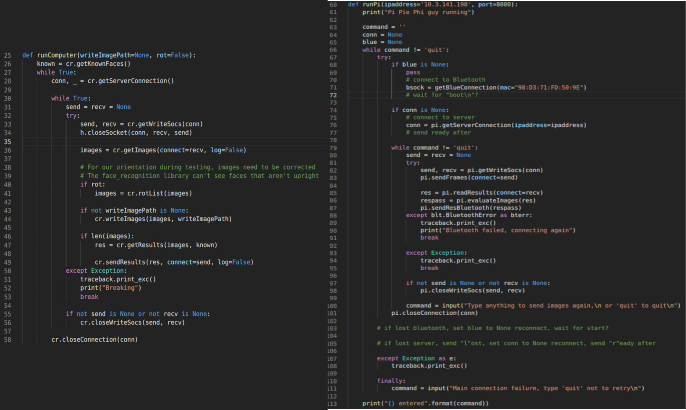
Figure 7.1: code for the new application, with the socket connection and the bluetooth connection, as well as the dynamic recovery of those connections should they fail. Requires further testing.
This week I focused mainly on the application code, besides the general slide preparation we're doing for the presentation of our project status next week. This application becomes less than useful if the connection to either the HC-05 or the server are severed, so the need for the application to dynamically recover either or both is a significant need for our final design.
The stages for Bluetooth communication between the Pi and the Micro is very important here, which is why this was difficult to do before. Now that Bluetooth is working, our final message structure is going to be modeled, and a mock-relationship is going to be formed to simulate the working end goal.
The Raspberry Pi for now is going to initiate every message response from the Microcontroller, likely from user input to enable a testing enviroment. This is to allow for the development of the state machine structure within the micro and testing of the Pi dynamically as two separate pursuits, as they're being developed separately by Evan and Viktoryia, and myself.
Bluetooth currently isn't implemented into the application software due to some discussion and hashing out of message protocals, order of events, and general sequence planning between Viktoryia and myself, though some final thoughts were put into place this Friday and the changes into the application will hopefully be finished and testable, if not tested, through the weekend.
Losing the connection with the socket, however, has been tested semi-thoroughly, and made more dynamic than the last iteration, discarding the need to reconnect every time to the server over and over again. This speeds up the process by small but noticeable margins.
In addition, the finding of the cropped face was done and enforced through all aspects of our facial recognition processes, and was then tested through photos of the team previously found to miss the biggest face in the picture. A simple calculation of face area was made, using the bounding box's top, bottom, left and right borders as the estimates for the dimensions of the face.
The result will be less than reliable for faces that are the same size and distance away, but this will be outside of our use case, since only one person in a group will be walking up to press the button to initiate the facial recognition process and image capturing. That person will be the largest face in the image by a decent margin, though we will test for robustness with a group of friends crowding around the door or so.
It's very possible this product may just need to come with a disclaimer on its instructions, or the packaging for the camera have a "Look here!" message to make it clear that the user's face needs to be clear and up front for the process.
Figure 9.1: The code responsible for pulling Bluetooth messages. getBlueMessage gets input til it finds a newline terminating character, and waitForBlueMessage allows the current setup to wait til it finds the desired message, at least until the specified timeout is hit
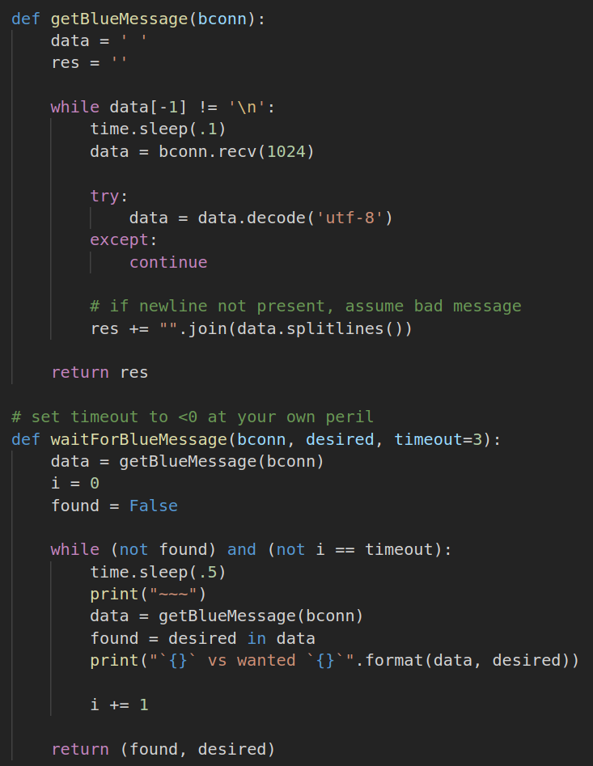
Week 9:
Date: March 8th, 2019
Total hours: 14
Description of Design Effors:
This week Viktoryia and I worked on getting the Bluetooth connection up and working, in the sense of the application. Messages from the HC-05 come through, but the characters come back jumbled up sometimes.
I'm leaning on Viktoryia's frequent sending to concatenate several transmissions together, and doing a search to find if the expected message is present. It's more limited, but it works right now.
This allows us to actually run the full application, which means we're getting closer to closing the system loops. That was our 'show me a thing' for this week, we gave an early view of it starting to work.
It was exciting to get a full look at the system running on its own like we're aiming for in the final design.
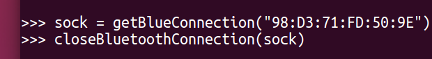

Figure 11.1&11.2: Interaction between the MSP432 and the Raspberry Pi, with the new MSP432 code not initiating any bluetooth signals until a connection is registered.
Week 11:
Date: March 21st, 2019
Total hours: 13
Description of Design Effors:
Viktoryia and I traded off helping Yash with soldering, though some of the connectors were small in this first PCB iteration so he took over for the most part once that happened. Starting to populate our board and do unit tests now that those basic connections have been made, and Yash is going to increase the pad size for later iterations.
Once Yash focused down on the difficult soldering, I looked at the STATE pin for the HC-05 and tried to integrate it with the MSP432. The pin on the dev board for the chip works just fine, it goes high and low when there's a connection or none, respectively, but it was harder to find the pin on the non-breakout board module itself.
I found it finally, it's the LED2 pin, or #32/PIO9 on the datasheet we have in lab, and it looks like we're going to just solder a wire to the MSP432 for now on our PCB (Yash claims it's not that difficult). I added it to the A12/P4.1 pin on the MSP432 to use in our process, and also to have an interrupt if need be later on, though the current plan isn't to use an interrupt.
Week 12:
Date: March 29th, 2019
Total hours: 15
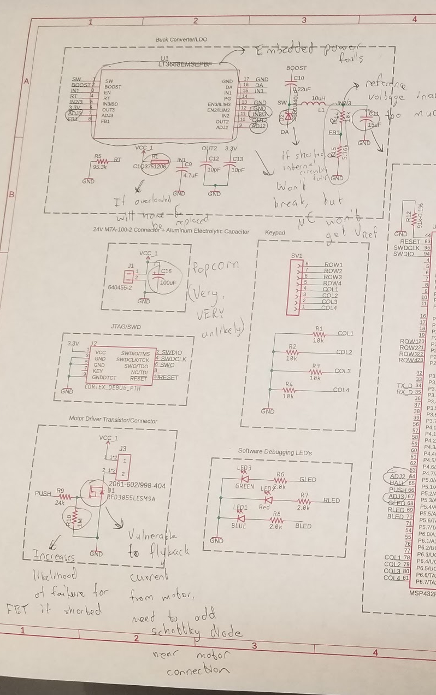
Figure 12.1: Helpful comments from the great and wonderful teammate Yash Nain
Description of Design Effors:
This week I largely worked on the document due tonight. Due to its heavy hardware nature, and my strong bias towards software in this project, I required a good bit of consulting from Yash to be able to get this done accurately, and decrypting the military handbook at first took a good while, though granted it was before we'd gone over anything in class about it.
We ran into some issue with our lab computer, as it completely deleted our folder we were working in and the latest save that had been made to GitHub was last Friday when I had committed the HC-05 state registering code.
I dug through the computer extensively on both the normal and admin account trying to find the folder we'd been working in (that had been difficult to find before to start with), eventually searcing for key and specific files in the root directories of the different drives of both, but to no avail.
I was able to load the code from last week onto it, but that means all of our progress from this week is set back. Hopefully rewriting the code for the MSP432 isn't terribly difficult, since a lot of our work is trial and error, but it's still a setback that was disheartening to find and be helpless against.
I wasn't tuned in to our aparent policy for not logging out of the group account on the lab computer, so this was potentially a known issue by the rest of the team, but my lack of knowledge of it led to me logging out the other day as I wrapped something of my own up.
Our new agreement, on top of not logging out of the computer now, is to make sure to commit and push to GitHub more religiously; we also cleared up Viktoryia's misconception that the micro code was still operating in a git folder that was broken, I had deleted the broken file and moved the relevant code into a completely functional folder.
I did my best to tell the whole team that I'd gotten it working, but I think Yash and Evan were the only two I'd used it around, as Viktoryia and I don't commonly work on micro code together, and Yash was the only one there when I got it working in the new enviroment.
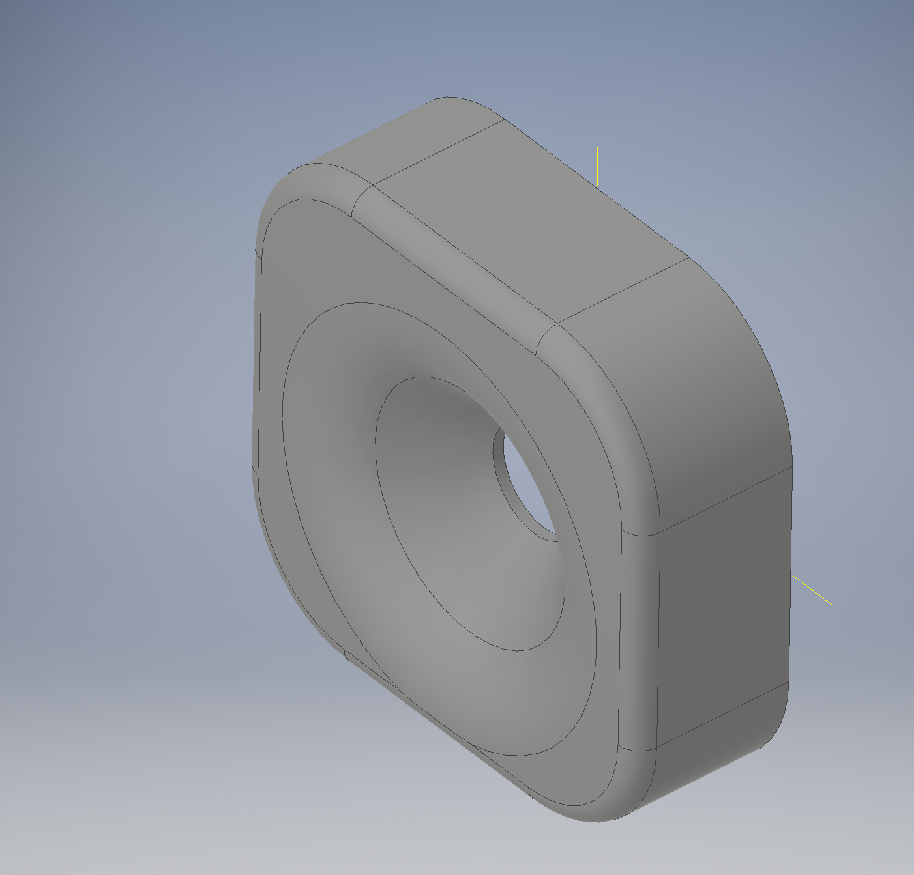
Figure 13.1: Doing some CAD to make some of the Product Enclosure for our design
Week 13:
Date: April 5th, 2019
Total hours: 14
Description of Design Effors:
This week I helped interface with the Microcontroller, after sitting down on Monday with Evan and getting it working. We started a new project, got that working, and then slowly moved all of our code and references in til the new project worked.
Once the code was working, Viktoryia and I did some alignment with the Bluetooth process's flow again to catch up on the lost work, and added in a password protection capability. This is simple for now, but we plan on using encryption to protect transmissions over the air.
I also made a Bluetooth-only copy of the application process, so Viktoryia could test the Micro without my being there and connecting the Pi to a "server" of some sort.
Finally, Yash and I have been working on the product housing, and I've been working on the CAD for the camera so far, and will be working on the Pi's case CAD after that's done, at least for version 1. I've also been talking with some ME friends about toleranes for general fitting, and also for screws, so hopefully this is going to be a closer fit to our components after their advice.
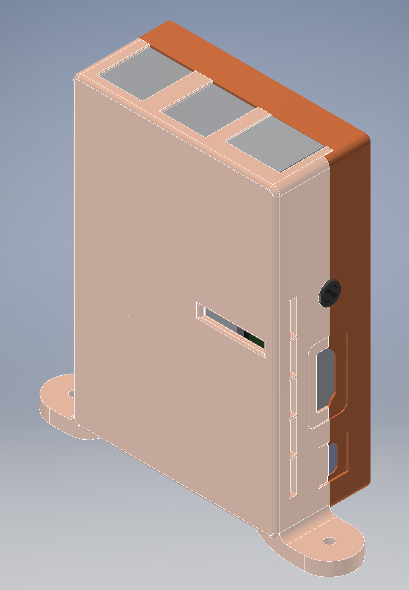
Figure 14.1: Pi CAD for the 3D printed enclosure
Week 14:
Date: April 12th, 2019
Total hours: 22
Description of Design Effors:
This week we had issues with programming the microcontroller. Yash's mighty efforts this week to diagnose our issues programming the microcontroller were impressively successful, but for those I was mainly helpful as a wall to bounce ideas off of, and some of the diagnosing of issues from the coder software.
Since I was much less helpful on the micro/hardware end, my focuses continued to go to the modeling and 3D printing of our enclosures, and some basic preparation of our door for the final product's door assembly.
The door is ready to be hooked-up with a makeshift wall, though that addition will make it hard to store.
The Pi Camera and Raspberry Pi, however, have had models built thanks to the help of some 3D CAD models online, namely models of the Pi Camera and Raspberry Pi itself to aid in feature measurements and fitting-evaluations prior to printing.
The Pi Camera was successful, fitting well and even threading for the screws it was designed for on the first try (though we didn't have the right wood screws on hand, so that will need changing anyways).
The Raspberry Pi enclosure is currently printing at the writing of this progress report, though we'll be able to evaluate how it fits very soon, and if it works screwing into the door frame in addition to all the periferals native to the Pi itself.
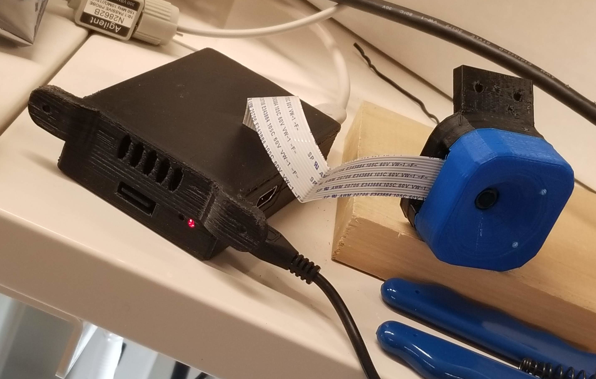
Figure 15.1: Pi and camera both inside of their relatively final versions of the enclosures they'll be mounted to the door with.
Week 15:
Date: April 19th, 2019
Total hours: 14
Description of Design Effors:
The camera and Raspberry Pi enclosures work, and after a few small iterations should be in their final-ish stages for mounting to the door. The rest of my time this week, besides small iterations to the CAD, I took the lead in making the door we found in the shop downstairs smaller by cutting the boards to size.
I tried to screw them back together in a way that minimized the warping, and I also mounted the pushbar to the door, dremmeled the screws so they didn't stick out, and cut wedges into the feet so that it fit under our workspace better. That took a good amount of time, since I was being careful and very precise with the measurements to make sure the resizing didn't go awry.
And it was successful, the door is fully functional... unless you open the door more than halfway, and then the whole system gets off balanced and falls forward... so we're likely going to have to either counter-balance the door, limit how much it can open, or both for our final demonstration.